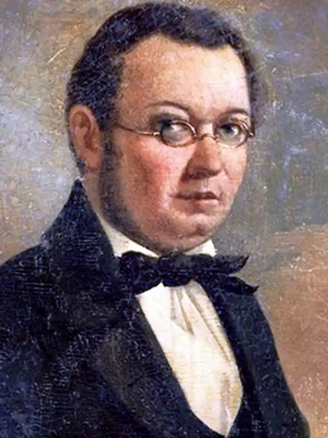
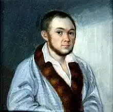

(6.03.1815 — 30.08.1869)
Народився в селі Безруково Ішимського повіту Тобольської губернії в сім'ї чиновника. Раніше дитинство він провів в м Березові, а в 12 років батько відправив його разом зі старшим братом до Тобольська гімназію.
Роки навчання Єршова в гімназії збіглися з часом пробудження в Росії інтересу до Сибіру і сибірської темі. У пресі з'являються твори поетів і письменників, виходять альманахи і збірники. Ці настрої впливають на юного Єршова. У Тобольську він збирає сибірські казки і стає їх справжнім неперевершеним знавцем. У 1831 р Петро Павлович закінчує гімназію. Батько переїжджає з синами в Петербург, щоб дати їм можливість вчитися в університеті. Єршов надходить на філософсько-юридичне відділення Петербурзького університету. У студентські роки він співпрацює в рукописному журналі А. Майкова "Пролісок", друкує свої вірші в "Бібліотеці для читання". У 1832 р Єршов, познайомившись з казками А.С. Пушкіна, починає роботу над власним твором — віршованій казкою "Коник-Горбоконик". Першу частину цієї казки він представив у вигляді своєї курсової роботи професору словесності П.А. Плетньова, який високо оцінив працю свого студента. У 1834 р казка була опублікована в "Бібліотеці для читання". Окремою книжкою казка була видана в 1835 році, коли П.П. Куйовдить закінчив навчання в університеті. Казку схвалив Пушкін, вона швидко набула широкої популярності і любов читачів. Успіх "Конька-Горбунка" полягав в істинної народності цієї казки, в основу її лягли сюжети казок про Іванка-дурня і Сівка-Бурке. Казка за життя автора витримала 7 видань. Починаючи з 4-го (1856 р) вона друкується з відновленням віршів, викинутих раніше цензурою, і авторськими доповненнями і доробками. Єршов говорив, що його казка є твір народне, взяте ним майже слово в слово у сибірських оповідачів. Він писав: "На" Коника-горбунок "на власні очі збувається російське прислів'я: не родися ні розумний, ні пригожий, а родись щасливий. Вся моя заслуга туту, що мені вдалося потрапити на народну жилу ". Яскраві образи наповнюють казку, роблячи її живою і цікавою для багатьох і багатьох поколінь дітей і дорослих: розумний, чесний і спритний Іванушка; іронічно зображені цар-батюшка і духовенство. У текст казки органічно вплітаються фольклорні мотиви і розмовна народна мова. У 1835 р перед поетом постає питання про повернення до Сибіру: вмирає його батько і старший брат. Він повертається до матері, яка потребує піклування. У 1936 р він стає учителем, потім інспектором, а в 1857 р — директором Тобольської гімназії. Він продовжує писати окремі оповідання, п'єси і вірші. Але всі вони не витримують ніякого порівняння з його першим юнацьким твором, який став справжнім шедевром російської літератури, в історію якої він так і увійшов автором одного єдиного твору.